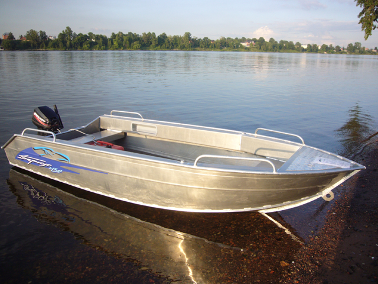

Катер Berkut S (Беркут S)
Оригинальная модель катера BERKUT S представляет собой алюминиевую моторную лодку. Лодка BERKUT S отлично подходит для тех, кто хочет перейти с обычной резиновой лодки на жёсткий корпус. Таким катером является именно BERKUT S.
У катера BERKUT S малый вес и имеется небольшая для килеватой лодки осадка, которая составляет 160 мм. Катер обладает большим внутренним пространством и легко вмещает в себя до 4 человек. Его ширина равна 1,65 м, длина – 4,30 м, что обеспечивает отличную вместительность всех пассажиров. Катер BERKUT S отличается хорошей маневренностью и необыкновенной остойчивостью. К тому же моторная лодка не забрызгивается водой на ходу, поэтому вы не увидите мокрых следов на палубе.
Технические характеристики катера:
| Параметр | Berkut S |
|
Длина |
4.50 м |
|
Ширина |
1.65 м |
|
Высота борта на миделе |
0.71 м |
|
Высота надводного борта |
0.52 м |
|
Килеватость на транце |
12° |
|
Грузоподъемность |
130 кг |
|
Пассажировместимость |
4 чел |
|
Корпус |
Сварной |
|
Высота стандартного транца |
0.38 м |
|
Рекоменд. мощность мотора |
15-40 л.с. |
|
Толщина днища |
3 мм |
|
Толщина борта |
2 мм |
Стандартное оборудование:
- Подуключины для вёсел;
- Все торцы влагостойкой фанеры окантованы резиновым уплотнителем;
- Два кормовых леера (в районе кормовой банки) и высокие носовые леера;
- Ручки на транце(2шт.) и в носовой части (1шт.);
- Кормовая и носовая банка с рундуками (из алюминия с пластиковой крышкой)2шт;
- Два больших бардачка в кормовой части;
- Два маленьких бардачка в носовой части;
- Якорный ящик пластиковый;
- Подстаканник пластиковый 4шт;
- Площадка под крепления датчика эхолота 1шт;
- Оклейка борта плёнкой;
Из дополнительных возможностей BERKUT S можно отметить мягкие накладки, размещённые на переднем и заднем рундуке, транспортировочный тент, тент ходовой, лодочный мотор. Безопасность катера Беркут С – на высочайшем уровне. Создатели продумали всё до мельчайших деталей, чтобы вы чувствовали себя комфортно. Более того, катер обладает непотопляемостью. Благодаря данным характеристикам, BERKUT S отлично подходит для водного туризма и рыбалки. Таким образом, ничто не сможет помешать вашему путешествию, а оно, в свою очередь, принесёт вам массу удивительных впечатлений.
{kind=link}
{kind=link}
{kind=link}
{kind=link}
{kind=link}
{kind=link}
{kind=link}
{kind=link}
{kind=link}
{kind=link}